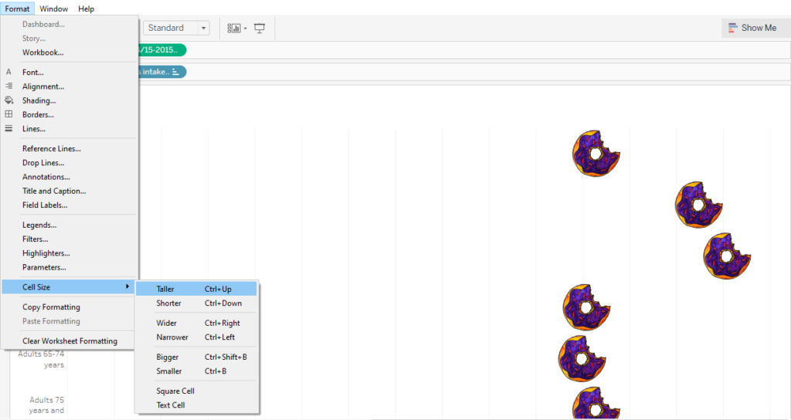

Have you ever combined multiple seemingly unrelated interests into one project? I personally love it when I can do that. Today’s inspiration combines watercolor paint, Photoshop, and Tableau Public. How sweet!
In the MakeoverMonday #Datafam community, the 2020 Week 3 data set explores the amount of sugar that UK residents consume across different age groups.
Upon seeing this data set, I immediately thought to approach it creatively because these weekly data exercises are meant to be educational…. and fun!
The topic of this week’s practice focused on sugar consumption, so it provided a sweet opportunity to try not only custom shapes in Tableau but also a neat chart technique.
What I will show next may not be “best practices” for the corporate world, but it sure was fun to create.
Follow along and learn how to use custom shapes and create what is called a Lollipop chart!
Watercolor Painting
I first pulled out my leftover watercolor paint supplies from one of my projects from Let’s Make Art and started sketching a doughnut with a bite taken out of it.
 From here, I started pouring out the watercolor paints and planning out the colors I wanted to make the doughnut.
From here, I started pouring out the watercolor paints and planning out the colors I wanted to make the doughnut.

Just a quick note here about these paints. Let’s Make Art makes watercolor painting such a wonderfully portable hobby. The little paints take barely a minute to set up! I highly recommend it if you’re looking for an easy to set up creative outlet! I keep all my supplies (including the tray) all within my desktop monitor stands.
Photoshop
I then took a picture of the completed doughnut and brought it into Photoshop to clean it up.


Cutting out the background of the completed watercolor doughnut picture with Photoshop. The image was saved as a .png to keep the background transparent.
Now that the doughnut is ready to go, let’s see how this goes into the data visualization!
Tableau Custom Shapes
Tableau happens to have a folder directory called “My Tableau Repository,” and this is where you can place custom images into the Shapes folder. As you can see, there are already a lot of images that are meant for best practices often in business settings.
However, today I decided that it is all about creativity and fun. I created a “Custom” folder and yep, you betcha I copied and pasted my doughnut.png file there!

Once I connected the source data to my Tableau workbook, I set out to incorporate the custom shapes in the software. The “original” set up data visualization was a bar chart, so I changed it to “Shapes” on the marks card. I then clicked on Shapes>More Shapes>Reload Shapes to get my new custom image to show up.
You’ll recognize that the list follows the Tableau Repository folder structure.


For the purpose of my data visualization, I decided to focus on the time period from 2014-2016 for all age groups. Others were included in the original data set.
Doughnut shape chart with 2014-2016 percentages on the columns shelf, free sugar intake on the rows shelf, and free sugar intake on the filters card to filter out the other age group categories.
From here I adjusted the cell size to make my doughnuts much larger on the chart. Originally, they came in much smaller.

As I was creating this data visualization, I originally wanted to have the doughnuts themselves create bars across the screen for each category. Then I realized this would look way too busy, so I looked into what is called a Lollipop chart instead. I might revisit that at a later date.
Lollipop Chart
First, I placed the same 2014-2016 pill on the columns shelf again, so I got two side by side charts. I then right clicked on the second chart axis to create a Dual Axis chart.
So what this did at first was essentially make it look like one of the charts disappeared. In fact, it did not, and you can tell by the circled double axis headers below. I then was able to click on one of the headers and go to the marks card to switch it to a bar chart.
From here I right clicked on the axis and specified “Synchronize Axis.” What this does is take the bars in the bar chart and stops them at the centers of the doughnuts instead of going past them.  From here, I adjusted the size of the bars and then started formatting them as a different color. I made them much lighter and opaque so they didn’t detract from the doughnuts themselves.
From here, I adjusted the size of the bars and then started formatting them as a different color. I made them much lighter and opaque so they didn’t detract from the doughnuts themselves. 
Adding a Reference Line
The original data set talked about the recommended amount of calories that come from sugar. It’s only 5% of the day’s calories, which is clearly much less than what these actual percentages actually are across the different age groups. I decided to show this significant discrepancy in the form of a reference line.
 I right clicked on the axis and clicked on Add Reference Line. There are various settings within this to get it looking the way you want. I made mine do a dashed line and show hover text about the recommended amount of sugar.
I right clicked on the axis and clicked on Add Reference Line. There are various settings within this to get it looking the way you want. I made mine do a dashed line and show hover text about the recommended amount of sugar.
Formatting
From here, I started changing some formatting of the data to display better. I noticed that the percentages wanted to show up with several decimal places with no discernible purpose, so I set out to reformat them.
I right clicked on the 2014-2016 pill within Measures to go into Default Properties>Number Format. What this does is set the formatting across the board in this workbook. I could have changed the formatting in other places as well, but those seem to affect only specific instances and not affect the project “globally.”

For some reason, whatever I did initially seemed to result in percentages that were not in the correct format. So, here are the settings that resulted in the percentages with one decimal place in this case.
 From here, I got into formatting the tool tips. If you recall from my last post, the annotations and tool tips do not seem to be easily readable by default. I like to change them to read more like sentences. Here is an example of that.
From here, I got into formatting the tool tips. If you recall from my last post, the annotations and tool tips do not seem to be easily readable by default. I like to change them to read more like sentences. Here is an example of that.
The Result
Here is what the “final” lollipop data visualization looks like with custom shapes. The interactive version with hover tool tips is located here!